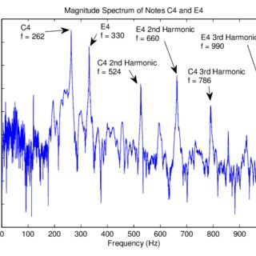

Week 7: Frequency Spectrum Analysis
Overview: This week focuses on analyzing the frequency spectrum of "Twinkle Twinkle Little Star" using tools like Sonic Visualiser. The frequency spectrum provides insights into the distribution of energy across different frequencies.
Frequency Distribution
The song contains fundamental frequencies corresponding to the melody's notes, along with harmonic overtones. These frequencies form the unique timbre of the piece.
Visualization
The spectrogram below was generated using Sonic Visualiser, showcasing the frequency intensity over time:
Conclusion
Analyzing the frequency spectrum reveals the harmonic richness of "Twinkle Twinkle Little Star." The presence of strong fundamental frequencies and their harmonics highlights the simplicity and purity of the melody.
Next Week →